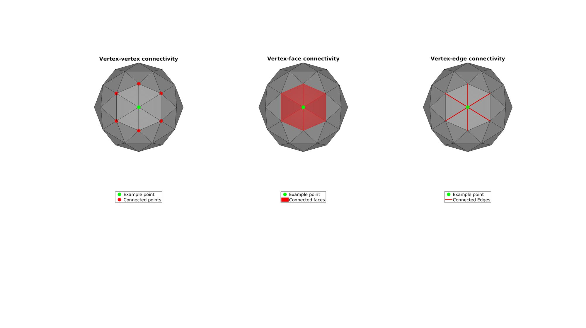
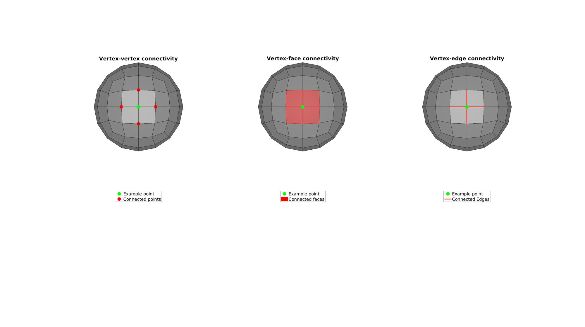
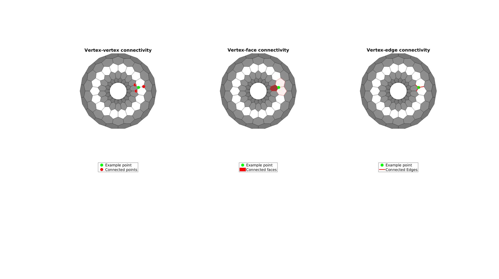
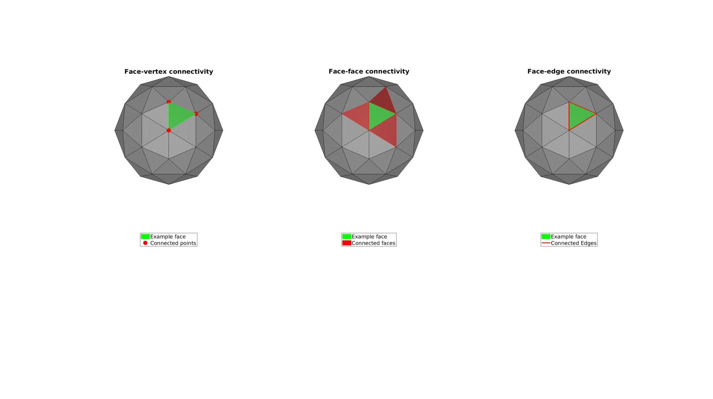
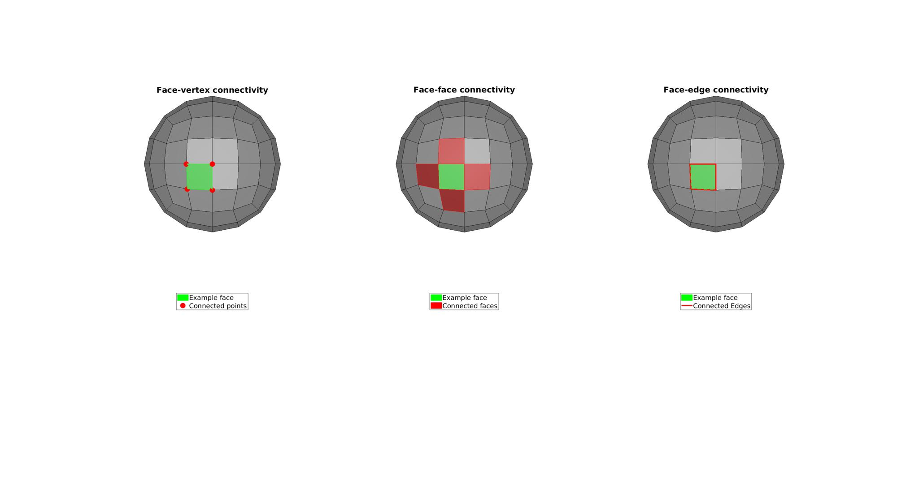
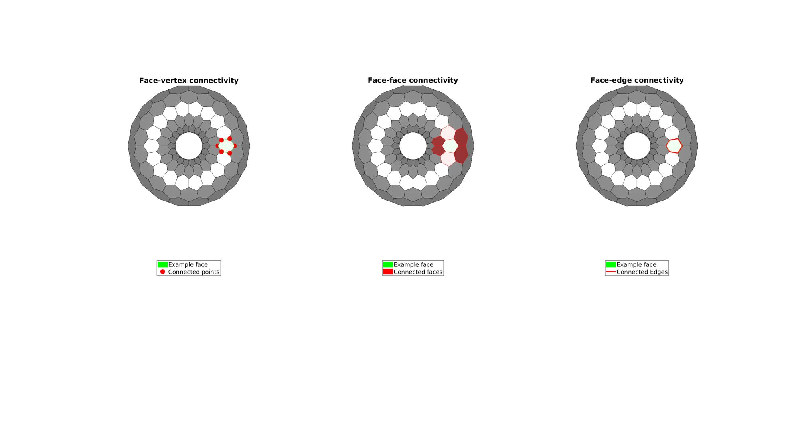
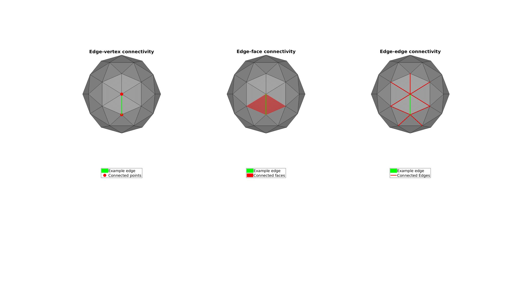
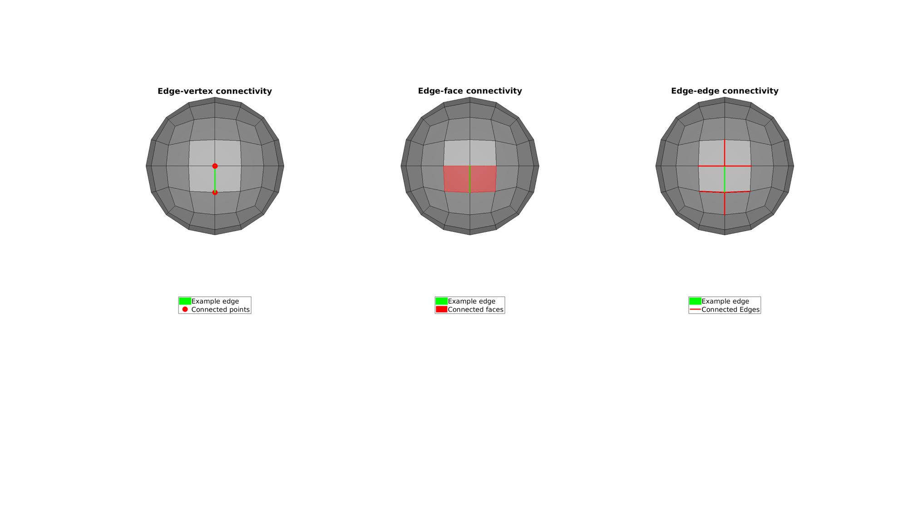
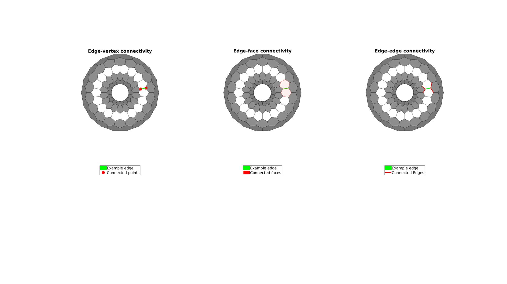

patchConnectivity
Below is a demonstration of the features of the patchConnectivity function
Contents
Syntax
[C]=patchConnectivity(F,V,conType);
Description
This functions creates connectivity matrices for the input patch data defined by the faces F and the vertices V. The output is a structure containing the connectivity matrices:
C.vertex.vertex C.vertex.face C.vertex.edge
C.edge.face C.edge.vertex C.edge.edge
C.face.vertex C.face.face C.face.edge
If the 3rd optional input conType is not provided its default value is 'all' and all connectivity matrices are output in the structure. If not all types are desired the user may request only particular types by setting conType. The following conTypes can be specified: conType (v stands for vertex, f for face, e for edge): 'all','vv','vf','ve','ev','ef','ee','fv','ff','fe'
Examples
clear; close all; clc;
Plot settings
markerSize=50;
Example 1: Demonstrating patchConnectivity for different patch types
for testCase=1:3
switch testCase case 1 [F,V]=geoSphere(1,1); case 2 [F,V]=quadSphere(2,1); case 3 r=1; %Sphere radius rc=1.5; %Central radius nr=12; nc=18; patchType='honey'; [F,V]=patchTorus(r,nr,rc,nc,patchType); end
Using patchConnectivity to compute connectivity arrays
[C]=patchConnectivity(F,V);
E=C.edge.vertex;
Z=V(:,3);
[~,indPlotVertex]=max(Z);
[~,indPlotFace]=max(mean(Z(F),2));
[~,indPlotEdge]=max(mean(Z(E),2));
Visualize vertex connectivity
indVertexVertex=C.vertex.vertex(indPlotVertex,:);
indVertexVertex=indVertexVertex(indVertexVertex>0);
indVertexFace=C.vertex.face(indPlotVertex,:);
indVertexEdge=C.vertex.edge(indPlotVertex,:);
cFigure;
subplot(1,3,1); hold on;
title('Vertex-vertex connectivity');
gpatch(F,V,'kw','k',0.5)
hl(1)=plotV(V(indPlotVertex,:),'g.','MarkerSize',markerSize);
hl(2)=plotV(V(indVertexVertex,:),'r.','MarkerSize',markerSize);
legend(hl,{'Example point','Connected points'},'Location','SouthOutside');
axisGeom;
view(2);
camlight headlight;
axis off;
clear hl;
subplot(1,3,2); hold on;
title('Vertex-face connectivity');
gpatch(F,V,'kw','k',0.5)
hl(1)=plotV(V(indPlotVertex,:),'g.','MarkerSize',markerSize);
hl(2)=gpatch(F(indVertexFace,:),V,'r','r',1);
legend(hl,{'Example point','Connected faces'},'Location','SouthOutside');
axisGeom;
view(2);
camlight headlight;
axis off;
clear hl;
subplot(1,3,3); hold on;
title('Vertex-edge connectivity');
gpatch(F,V,'kw','k',0.5)
hl(1)=plotV(V(indPlotVertex,:),'g.','MarkerSize',markerSize);
hl(2)=gpatch(E(indVertexEdge,:),V,'none','r',1);
hl(2).LineWidth=3;
legend(hl,{'Example point','Connected Edges'},'Location','SouthOutside');
axisGeom;
view(2);
camlight headlight;
axis off;
clear hl;
drawnow;
   Visualize face connectivity
indFaceVertex=C.face.vertex(indPlotFace,:);
indFaceVertex=indFaceVertex(indFaceVertex>0);
indFaceFace=C.face.face(indPlotFace,:);
indFaceFace=indFaceFace(indFaceFace>0);
indFaceEdge=C.face.edge(indPlotFace,:);
cFigure;
subplot(1,3,1); hold on;
title('Face-vertex connectivity');
gpatch(F,V,'kw','k',0.5)
hl(1)=gpatch(F(indPlotFace,:),V,'g','g',1);
hl(2)=plotV(V(indFaceVertex,:),'r.','MarkerSize',markerSize);
legend(hl,{'Example face','Connected points'},'Location','SouthOutside');
axisGeom;
view(2);
camlight headlight;
axis off;
clear hl;
subplot(1,3,2); hold on;
title('Face-face connectivity');
gpatch(F,V,'kw','k',0.5)
hl(1)=gpatch(F(indPlotFace,:),V,'g','g',1);
hl(2)=gpatch(F(indFaceFace,:),V,'r','r',1);
legend(hl,{'Example face','Connected faces'},'Location','SouthOutside');
axisGeom;
view(2);
camlight headlight;
axis off;
clear hl;
subplot(1,3,3); hold on;
title('Face-edge connectivity');
gpatch(F,V,'kw','k',0.5)
hl(1)=gpatch(F(indPlotFace,:),V,'g','g',1);
hl(2)=gpatch(E(indFaceEdge,:),V,'none','r',1);
hl(2).LineWidth=3;
legend(hl,{'Example face','Connected Edges'},'Location','SouthOutside');
axisGeom;
view(2);
camlight headlight;
axis off;
clear hl;
drawnow;
   Visualize edge connectivity
indEdgeVertex=C.edge.vertex(indPlotEdge,:);
indEdgeVertex=indEdgeVertex(indEdgeVertex>0);
indEdgeFace=C.edge.face(indPlotEdge,:);
indEdgeFace=indEdgeFace(indEdgeFace>0);
indEdgeEdge=C.edge.edge(indPlotEdge,:);
indEdgeEdge=indEdgeEdge(indEdgeEdge>0);
cFigure;
subplot(1,3,1); hold on;
title('Edge-vertex connectivity');
gpatch(F,V,'kw','k',0.5)
hl(1)=gpatch(E(indPlotEdge,:),V,'g','g',1); hl(1).LineWidth=3;
hl(2)=plotV(V(indEdgeVertex,:),'r.','MarkerSize',markerSize);
legend(hl,{'Example edge','Connected points'},'Location','SouthOutside');
axisGeom;
view(2);
camlight headlight;
axis off;
clear hl;
subplot(1,3,2); hold on;
title('Edge-face connectivity');
gpatch(F,V,'kw','k',0.5)
hl(1)=gpatch(E(indPlotEdge,:),V,'g','g',1); hl(1).LineWidth=3;
hl(2)=gpatch(F(indEdgeFace,:),V,'r','r',1);
legend(hl,{'Example edge','Connected faces'},'Location','SouthOutside');
axisGeom;
view(2);
camlight headlight;
axis off;
clear hl;
subplot(1,3,3); hold on;
title('Edge-edge connectivity');
gpatch(F,V,'kw','k',0.5)
hl(1)=gpatch(E(indPlotEdge,:),V,'g','g',1); hl(1).LineWidth=3;
hl(2)=gpatch(E(indEdgeEdge,:),V,'none','r',1); hl(2).LineWidth=3;
legend(hl,{'Example edge','Connected Edges'},'Location','SouthOutside');
axisGeom;
view(2);
camlight headlight;
axis off;
clear hl;
drawnow;
   end
Example 2: Using the conTypes input to control output request
Request only the edge-edge connectivity
C=patchConnectivity(F,V,'ee')
C =
struct with fields:
edge: [1×1 struct]
Request both the edge-edge connectivity and the face-face connectivity
C=patchConnectivity(F,V,{'ee','ff'})
C =
struct with fields:
edge: [1×1 struct]
face: [1×1 struct]
Loop over all types and compare computation speed
conTypeSet={'all','vv','vf','ve','ev','ef','ee','fv','ff','fe'};
for q=1:1:numel(conTypeSet)
tic
C=patchConnectivity(F,V,conTypeSet{q});
t=toc;
disp([conTypeSet{q},': ',num2str(t),' seconds'])
end
all: 0.00651 seconds vv: 0.00128 seconds vf: 0.000399 seconds ve: 0.000795 seconds ev: 0.000872 seconds ef: 0.00066 seconds ee: 0.001145 seconds fv: 0.000348 seconds ff: 0.001461 seconds fe: 0.00111 seconds

GIBBON www.gibboncode.org
Kevin Mattheus Moerman, gibbon.toolbox@gmail.com
GIBBON footer text
License: https://github.com/gibbonCode/GIBBON/blob/master/LICENSE
GIBBON: The Geometry and Image-based Bioengineering add-On. A toolbox for image segmentation, image-based modeling, meshing, and finite element analysis.
Copyright (C) 2019 Kevin Mattheus Moerman
This program is free software: you can redistribute it and/or modify it under the terms of the GNU General Public License as published by the Free Software Foundation, either version 3 of the License, or (at your option) any later version.
This program is distributed in the hope that it will be useful, but WITHOUT ANY WARRANTY; without even the implied warranty of MERCHANTABILITY or FITNESS FOR A PARTICULAR PURPOSE. See the GNU General Public License for more details.
You should have received a copy of the GNU General Public License along with this program. If not, see http://www.gnu.org/licenses/.